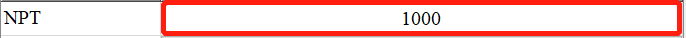
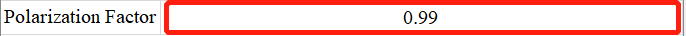
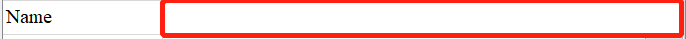
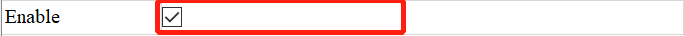
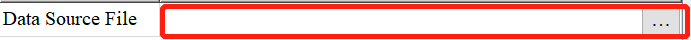

将包含处理函数类（构建规则详见2）的.py文件放在plugin文件夹下，即可在界面中找到对应函数；
用户可以根据需求随意对文件进行命名，但文件命名建议不要超过20个字符，防止界面控件显示不开，如图1①。
class ProcessingFunction(object):
function_text = ““
function_tip = ““
def __init__(self):
self.params_dict = OrderedDict()
@abstractmethod
def run_function(self):
pass
def param_validation(self):
return None
其中高亮部分为建议填写的内容，红色字体部分为必须填写内容，其它部分为模板，无需修改。
接口参数与函数说明如下：
| 参数/函数名 | 类型 | 功能 | 是否必填 | 注意事项 |
|---|---|---|---|---|
| function_text | string | 显示在界面上的函数名称 | 是 | 同一个py文件下不同处理函数类的function_text不可重名，否则只显示最后定义的类。 |
| function_tip | string | 在用户鼠标停留时能显示提示信息 | 建议填写 | 无 |
| self.params_dict | OrderedDict | 显示为界面上函数的参数名称 | 是 | 具体定义方法见2.2处理函数的参数定义规则。 |
| run_function() | 函数 | 定义处理函数的位置 | 是 | 该函数对参数的使用规则见2.2。 |
| param_validation() | 函数 | 通过重写该函数，对参数进行进一步约束，如判断某个参数是否为空等 | 根据情况填写 | 在run_function()函数一开始调用该函数，函数编写规则参考2.4。 |
self.params_dict["参数变量"] = {"type": "参数类型", "value": 参数初始化值, "text": "在界面显示的文字","tip":"参数提醒"}
举例：self._params_dict['x_range'] = {'type': 'tuple', 'value': None, 'text': 'x range', 'tip': '(min,max) in pixel'}
| key值 | 定义说明 |
|---|---|
| 参数变量 | 参数的变量名称，可使用self.get_param_value("参数变量")得到该变量的名称，在run_function函数中使用，如npt=self.get_param_value("npt") |
| type | 参数类型，目前包括的参数类型为包括“int“，”float“，”str“，”tuple“，” enum“，” bool “ 等，在2.2.2部分进行详细介绍。 |
| value | 参数的初始化值：初始化值的类型必须和定义的类型相一致，没有填None。 |
| text | 参数在界面上所显示的文字，见图1④。 |
| tip | 参数的提示信息，当鼠标悬停在参数位置时，显示对应的信息 |
程序对参数控件进一步封装，可以使用以下类型，生成需要放置参数值的控件，之后无需对参数类型进行校验，控件类型为字典key值，因此，必须加““。
| 关键字 | 类型 | 界面形态 |
|---|---|---|
| "int" | 整形数据 |  |
| "float" | 浮点类型 |  |
| "str" | 字符串类型 |  |
| "bool" | 布尔类型 |  |
| "tuple"("tuple_int"、"tuple_float") | 元组类型 | |
| "file" | 文件类型，点击右侧按钮，弹出文件选择框，用于导入文件路径 |  |
| "save" | 文件夹类型，点击右侧按钮，弹出文件夹选择框，用于导入文件夹路径 | |
| "enum" | 枚举型，用于在多个信息中选择其一时，使用时必须在处理函数类内部定义枚举类 |
"enum"类型tip：
枚举类的定义，高亮部分为需要修改的部分。
from enum import unique, Enum
@unique
function_tip = ““
class Integrate1D_Azimuthal_Unit(Enum):
unit1 = "q_nm^-1"
unit2 = "2th_deg"
unit3 = "r_mm"
Integrate1D_Azimuthal_Unit：类名，可随意命名
unit1, unit2, unit3：枚举变量，可随意命名
"q_nm^-1", "2th_deg", "r_mm"：枚举变量对应的枚举值
注意事项：枚举型参数初始化值必须填写，请务必保持与类名一致。
例如该参数的初始化值可定义为：
self.params_dict["unit"] = {"type": "enum", "value": Integrate1D_Azimuthal_Unit.unit1, "text": "Unit"}
处理函数采用重写基类中run_function函数实现。
参数的获取使用：self.get_param_value("参数名")，如npt=self.get_param_value("npt")
| 返回值key | 一维谱图 | 二维谱图 | 带坐标值的二维谱图 | mapping类型图像 |
|---|---|---|---|---|
| 'data' | {'x':np.numpy, 'y':np.numpy} | {'image':np.numpy} | {'x':np.numpy, 'y':np.numpy, 'z':np.numpy} | {'value':float} |
| 'plot' | 图像展示参数，详见plot参数表 | |||
| 'parameter_display' | 字典形式，需要更改的值在key值为本步的变量名，如修改range值，返回值为{range:*} | |||
| 其它在pipline中需要传递的参数 | 传递过程中需要key值一致 | |||
| 返回值key | 说明 | 一维谱图 | 二维谱图 | 带坐标值的二维谱图 | mapping类型图像 |
|---|---|---|---|---|---|
| 'type' | 图像类型 | 1DP | 2DV | 2DXY | 2DP |
| 'data' | 图像数据 | {x:np.numpy, y:np.numpy} ，如果一维谱图需要多条曲线，为每条曲线定义name，并表示为一个字典，放在list中分别表示， 例如[{'name':'line1':'x':np.numpy, 'y':np.numpy},{'name':'line2':'x':np.numpy, 'y':np.numpy}],如想配置更多线形信息参照一维曲线参数表 | {np.numpy} | {'x':np.numpy, 'y':np.numpy, 'z':np.numpy} | {'value':float} |
| 'label' | x，y轴的坐标轴信息 | {'xlabel': string, 'ylabel': string} | |||
| 'title' | 需要展示的文字信息 | string | |||
| 关键字 | 取值 |
|---|---|
| 'name' | 曲线名称，同一个plot中的name不可重名 |
| 'x' | x值：numpy类型 |
| 'y' | y值：numpy类型 |
| 'style' | 线形：点图：'scatter'，线图：'line'，竖直线：'Vline'，水平线：'Hline' |
| symbol | 点图：o', 's', 't', 't1', 't2', 't3', 'd', '+', 'x', 'p', 'h', 'star', 'arrow_up', 'arrow_right', 'arrow_down', 'arrow_left', 'crosshair' 线图、竖直线、水平线：Qt.SolidLine等PyQt5.QtCore.Qt所有支持的线形 |
| line_style | 线图、竖直线、水平线：Qt.SolidLine等PyQt5.QtCore.Qt所有支持的线形 |
| 'legend' | 图例：string类型 |
| 'color' | 颜色:'r','b'或rgb值g构成的元组，如(200, 200, 255) |
| 'width' | 线宽：int类型,如果为line类型，为线宽，如果为点图，为点的大小 |